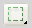
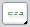
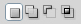
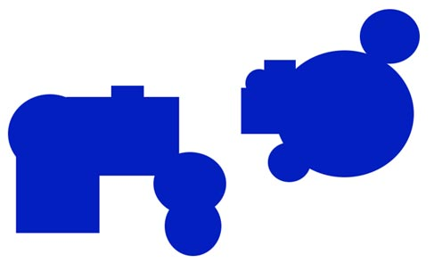
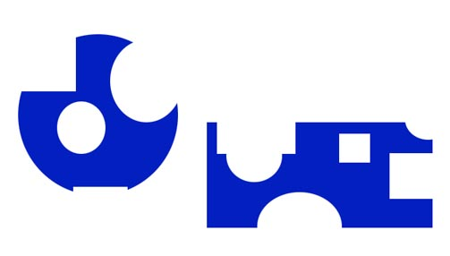
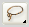
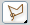
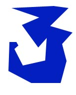
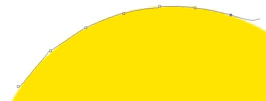
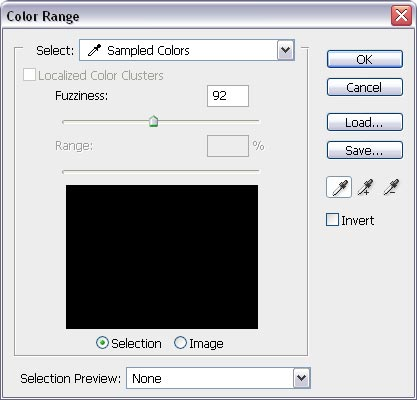

Ce tutoriel a pour objectif de vous faire connaître et de vous apprendre à utiliser une fonctionnalité très simple, et pourtant très utile, de Photoshop : les sélections.
Qu'est-ce qu'une sélection ? Que peut-on faire avec ? Quels sont les différents moyens d'en créer une ? Autant de questions auxquelles je répondrai ici.
Pour commencer, et avant d'entrer de plain-pied dans la pratique, je vais répondre à quelques questions que vous devez probablement vous poser concernant les sélections.
Qu'est-ce que la sélection ?
C'est une fonction de Photoshop vous permettant d'isoler un ou plusieurs pixels particuliers d'un calque, et ainsi de travailler dessus sans altérer les autres. En somme, comme son nom l'indique, elle permet de sélectionner une partie d'une image.
Sur votre plan de travail, une sélection se présente comme une ligne en pointillés blancs et noirs.
En guise d'exemple, j'utiliserai cette image de Garfield :
Cliquez pour agrandir
Si je l'ouvre sous Photoshop et que j'effectue une sélection sur l'œil, voici ce que j'obtiens :
Bon, d'accord, mais à quoi ça sert, tout ça ?
Comme je l'ai dit un peu plus haut, on va pouvoir travailler proprement sur tous les pixels se trouvant à l'intérieur de la sélection, et ce, sans toucher aux autres. Concrètement, si je prends mon outil pinceau et que j'en passe un coup sur mon dessin, seul l'œil de Garfield sera colorié, le reste sera intact, même si ma souris dépasse de la sélection.
J'obtiendrai donc un résultat comme celui-ci :
Ce système fonctionne avec le pinceau, bien sûr, mais aussi avec tous les autres outils, ainsi qu'avec tous les filtres de Photoshop. Si c'est pas beau, ça :p
Comment fait-on une sélection ?
Il existe une multitude de moyens pour effectuer une sélection, chacun ayant une précision, une utilité et une efficacité différente.
Certains pourront vous sembler un peu compliqués, mais n'ayez crainte, nous allons les aborder ensemble :)
Je vais donc vous présenter la foultitude de moyens qu'il existe pour créer une sélection. A vous de déterminer, dans les différentes situations dans lesquelles vous vous trouverez, lequel d'entre eux vous sera le plus utile ;)
Les outils de sélection de base
Ils se trouvent dans la barre d'outils de votre logiciel : il s'agit de la deuxième case en partant du haut. Normalement, cette case est celle du Rectangle de sélection. Mais si vous maintenez le clic de la souris enfoncé dessus, vous verrez apparaître d'autres outils. Nous allons les découvrir un par un.
Le rectangle et l'ellipse de sélection
Ce sont les plus simples et les plus basiques. Mais ils peuvent parfois se révéler très utiles ;)
Le Rectangle de sélection est représenté par cette icône :

Et, si vous maintenez le clic de la souris dessus, vous trouverez l'icône de l'Ellipse de sélection, qui ressemble à cela :
Pour les utiliser, cliquez à l'endroit où vous souhaitez placer votre rectangle ou votre ellipse, maintenez le clic enfoncé en déplaçant la souris pour agrandir votre forme, puis relâchez.
Et voilà, votre rectangle (ou votre ellipse) est créé ! Vous voyez, ce n'était pas très compliqué :lol:
L'outil de sélection d'une ligne/d'une colonne
Ces deux outils sont représentés par ces icônes :

Ils vous permettent de sélectionner une ligne entière ou une colonne entière de pixels dans une image. Pour les utiliser, il vous suffit de cliquer n'importe où sur votre image, de maintenir le clic enfoncé en déplaçant la souris pour définir l'emplacement de votre sélection, puis de relâcher.
Ces outils vous semblent probablement inutiles, mais ils peuvent avoir leur intérêt dans la création, notamment, de webdesigns ou de signatures.
Aller plus loin : utiliser le pathfinder
À première vue, les outils rectangles et ellipses de sélection semblent assez basiques. Mais un paramètre très utile permet d'obtenir des formes plus variées à partir de ces deux outils : le Pathfinder.
Il se trouve en haut de votre écran, dans la fenêtre servant à paramétrer vos outils, sous la forme de quatre boutons :

Normalement, c'est le premier bouton en partant de la gauche "Nouvelle sélection" qui est actif : concrètement, cela se traduit par le fait que lorsque vous avez créé un rectangle/une ellipse de sélection, et que vous en tracez un autre à côté, le premier s'efface et seul celui que vous venez de créer est encore actif.
Pour remédier à cela, vous pouvez cocher la seconde case : "Ajouter à la sélection". Une fois cette case cochée, vous pouvez créer autant de rectangles ou d'ellipses que vous voulez, ils appartiendront tous à la même sélection ;)
Vous pouvez même combiner plusieurs ellipses et rectangles pour obtenir des formes comme celles-ci :

N'hésitez pas à faire quelques expérimentations :)
La troisième icône du pathfinder "Soustraire à la sélection", elle, produit l'effet inverse : si vous créez un rectangle ou une ellipse à côté d'une sélection déjà active, cela créera des "trous" dans cette sélection. Voici quelques exemples :

La quatrième icône, enfin, ne conserve que l'intersection de deux sélections.
Avec tout ça, vous devriez déjà arriver à créer des formes intéressantes ^^
Et si vous vous sentez encore un peu perdu, je vous conseille de faire des expériences, de pratiquer, pour bien maîtriser ces outils, car la suite risque d'être un petit peu plus compliquée :p
Le lasso et ses dérivés
L'icône du Lasso est celle-ci :

En cliquant dessus, vous accéderez aux deux dérivés du lasso : le Lasso magnétique et le Lasso polygonal. Vous verrez que ces trois outils sont certes un peu plus complexes à maîtriser (pas beaucoup plus, non plus ^^ ), mais qu'ils offrent davantage de liberté quant aux formes.
Le lasso
Le lasso est le plus difficile à maîtriser. D'ailleurs, il est quasiment impossible de l'utiliser correctement sans trembler, à moins d'avoir un excellent coup de souris ou de posséder une tablette graphique. Cependant, il peut être pratique pour sélectionner une surface réduite.
Pour l'utiliser, il vous suffit de maintenir le clic gauche enfoncé et de dessiner, avec la souris, la forme que vous souhaitez. Ensuite, vous n'avez plus qu'à relâcher le bouton pour activer la sélection.
Voici un petit exemple de ce qu'on peut réaliser avec ça :
Vous noterez tout de même que le trait est assez irrégulier :(
Le lasso polygonal
Déjà moins complexe à utiliser que le lasso, mais moins adapté pour les courbes. Son utilisation est simple : il suffit de cliquer pour définir chaque sommet du polygone, puis de fermer le tracé en cliquant une deuxième fois sur le premier sommet.
On peut ainsi créer des formes comme celle-ci :

Le lasso magnétique
Celui-là n'est pas utilisé pour créer des formes à proprement parler, mais plutôt pour détourer une image, car il a la propriété de se "fixer" sur les pixels dont les couleurs sont contrastées.
Le lasso magnétique s'utilise comme le lasso polygonal : en cliquant une fois et en dessinant autour de la forme que vous souhaitez détourer. Vous verrez que cet outil créera automatiquement des points d'ancrage autour de votre forme. Mais si vous voulez créer ces points manuellement, il vous suffit de cliquer :)

Exemple d'utilisation du lasso magnétique
Les outils de sélection par couleur
Comme le lasso magnétique, ces outils sont surtout utilisés pour le détourage et non pour créer des formes. Vous pouvez vous en servir pour récupérer une partie d'une image.
L'outil de sélection rapide
En maintenant le clic gauche enfoncé et en promenant votre souris sur la zone que vous souhaitez détourer, l'outil de sélection rapide détectera les différences de couleur entre les pixels et effectuera la sélection en conséquence. Vous pouvez modifier l'épaisseur de la brosse pour réaliser un travail plus précis. Cet outil possède également la fonction pathfinder, qui vous permettra de corriger vos petites erreurs, car c'est difficile d'obtenir un résultat satisfaisant du premier coup ;)
La baguette magique
Un outil qui porte bien son nom ^^
La baguette magique permet de sélectionner une zone d'une même couleur à partir du point où vous cliquez. Il vous suffit de faire un clic sur l'endroit que vous voulez sélectionner, et c'est fait. En réglant la tolérance de l'outil grâce à l'option "tolérance" se trouvant en haut de votre écran (entrez un nombre compris entre 0 et 255), vous pouvez étendre ou réduire la plage de couleurs que la baguette magique acceptera.
Et (une fois n'est pas coutume) le pathfinder est également disponible avec cet outil :p
La plage de couleurs
Vous la trouverez dans le menu Sélection --> Plage de couleurs (ou, si vous avez la version anglophone, dans le menu Select --> Color range).
Vous obtenez une fenêtre ressemblant à ceci :

Ici, vous disposez de plusieurs éléments :
Une représentation de votre image en noir et blanc, sur laquelle vous cliquerez pour ajouter ou soustraire des couleurs à votre sélection.
L'outil "Addition"
: en cliquant sur l'écran avec cet outil, vous ajouterez des couleurs à votre sélection.
L'outil "Soustraction"
: en cliquant sur l'écran avec cet outil, vous enlèverez des couleurs à votre sélection.
Le niveau de tolérance (appelé "fuzziness" en version anglophone), vous permet, comme pour la baguette magique, de modifier l'étendue de la plage de couleurs que vous voulez sélectionner.
Une fois que tous vos réglages sont faits et que vous appuyez sur "Ok", vous constaterez que toutes les zones qui étaient en blanc dans l'aperçu sont maintenant comprises dans une sélection.
Sympathique, n'est-ce pas ? :)
Le mode masque
Un outil extrêmement pratique et très simple d'utilisation, qui fonctionne aussi bien pour le détourage que pour créer des formes. La case du mode masque se trouve tout en bas de la barre d'outils de Photoshop :
En cochant cette case, vous passerez en mode masque, un mode dans lequel on ne peut utiliser que le noir et le blanc. Sélectionnez l'outil pot de peinture
et remplissez de noir toute votre image. Vous verrez que dans ce mode, le noir n'apparaît pas noir, mais rouge et légèrement transparent.
Puis, avec un pinceau blanc, coloriez toutes les zones de votre image que vous souhaitez intégrer dans une sélection. Enfin, décochez la case masque.
La plus grosse partie de mon cours est terminée. Mais j'ai encore envie de vous embêter ^^
C'est pourquoi je rajoute une troisième partie à mon tutoriel : quelques trucs et astuces pour que vous sachiez utiliser les sélections comme un pro :)
D'autres manières d'obtenir une sélection
Eh oui, il y en a encore ! Mais rassurez-vous, elles ne sont pas très compliquées ;)
Sélectionner les pixels d'un calque
Admettons que vous ayez une image avec deux calques : un contenant un décor,l'autre un personnage. Vous souhaiteriez récupérer la sélection se trouvant autour du personnage, par exemple pour créer une ombre portée ou une silhouette.
Eh bien, pour faire cela, il vous suffit de maintenir la touche Ctrl enfoncée et de cliquer sur la vignette se trouvant à côté du calque du personnage.
Créer une sélection à partir d'un tracé
Pour créer une sélection à partir d'un tracé, faites un clic droit sur votre tracé et sélectionnez "Définir une sélection" (ou "Make selection" en version anglophone).
Euh, d'accord, mais comment fait-on un tracé ?
Ce n'est pas à moi de vous le dire : mon cours ne concerne que les sélections. Si vous voulez en savoir plus sur les tracés, je vous invite à consulter ce tutoriel ;)
Modifications d'une sélection
Une fois que votre sélection est faite, plusieurs fonctions vous permettent de la modifier de différentes façons.
Déplacer la sélection
Deux solutions s'offrent à vous pour déplacer une sélection sur votre image :
Si vous souhaitez ne déplacer que la sélection, cliquez sur l'icône "nouvelle sélection"
qui se trouve dans le pathfinder des outils rectangle de sélection, lasso, baguette magique, etc., maintenez enfoncé le clic gauche dans la sélection et faites glisser votre souris pour la déplacer.
Si vous souhaitez déplacer à la fois la sélection et les pixels qu'elle contient, utilisez l'outil flèche
.
Dilater/Contracter
Vous pouvez utiliser ces deux options en allant dans le menu Sélection --> modifier. La seule chose que vous avez à faire, c'est de déterminer l'ampleur (en pixels) de la dilatation ou de la contraction, et Photoshop fera le reste. Je vous laisse le soin de découvrir ce que vous pouvez faire avec ces options ;)
Inverser la sélection
Imaginons que vous ayez créé une sélection en forme de cercle (maintenant, vous savez comment faire ^^ ), et que vous souhaiteriez colorier toute votre image à l'exception de ce cercle. Pour ce faire, vous pouvez utiliser l'option Sélection --> Inverser (ou Select --> Inverse). Une fois activée, tous les pixels qui ne faisaient pas partie de la sélection en font à présent partie, et vice-versa.
Modifications avancées
Deux options très utiles vous permettront d'effectuer de nombreuses transformations sur vos sélections, comme des rotations, des agrandissements/réductions, des torsions...
Si vous souhaitez ne transformer que votre sélection, allez dans le menu Sélection --> Transformer la sélection (Ou Select --> Transform Selection)
Si vous souhaitez transformer à la fois la sélection et les pixels qu'elle contient, utilisez le raccourci clavier Ctrl+T
Dans les deux cas, vous verrez apparaître un cadre autour de votre sélection, que vous pouvez utiliser pour la transformer. En faisant un clic droit sur ce cadre, vous pourrez accéder aux options de transformation suivantes :
Homothétie (Scale) : permet de modifier la hauteur et/ou la largeur de votre sélection
Rotation (Rotate) : permet de faire pivoter votre sélection
Inclinaison (Skew) : permet d'incliner votre sélection
Torsion (Distort) : permet de tordre votre sélection en déplaçant chacun des coins du cadre
Perspective : permet de donner un effet de perspective à votre sélection
Déformation (Warp) : permet d'effectuer des transformations plus complexes en déplaçant les noeuds d'un "filet" spécial
Rotation à 180° (Rotate 180°) : permet de faire pivoter votre sélection à 180°
Rotation à 90° horaire/antihoraire (Rotate 90° CW/CCW) : permet de faire pivoter votre sélection à 90° dans le sens des aiguilles d'une montre ou dans le sens inverse
Symétrie axe horizontal/vertical (Flip Horizontal/Vertical) : permet de "retourner" votre sélection, comme pour créer son reflet dans un miroir
Une fois que vos transformations sont achevées, vous n'avez plus qu'à valider le tout en cliquant sur cette icône :
En revanche, si vous n'êtes pas satisfait de vos transformations, vous pouvez tout annuler en cliquant sur cette icône :
Déselectionner
Vous n'avez plus besoin de votre sélection et vous souhaiteriez la supprimer pour pouvoir travailler de nouveau sur toute votre image ?
Rien de plus simple ! Allez dans le menu Sélection --> Déselectionner (Select --> Deselect) ou utilisez le raccourci clavier Ctrl+D.
Et voilà, ce tutoriel est terminé. J'espère qu'il vous aura appris quelque chose d'utile. Je ne puis que vous conseiller (encore une fois), de pratiquer, de vous exercer avec les sélections avant de vous lancer dans des créations concrètes ^^
Si vous avez des questions, des suggestions, des remarques quelconques, n'hésitez pas à vous manifester dans les commentaires ;)
 Cliquez pour agrandir
Cliquez pour agrandir